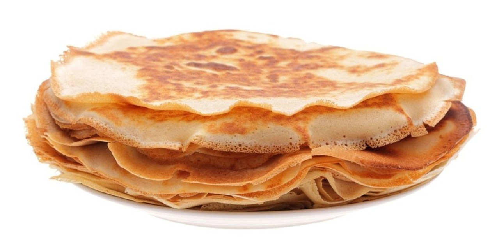

Panqueques

Ricos y fáciles panqueques para hacer canelones, comer con dulce de leche o rellenar con lo que quieras.
Ingredientes para la masa
- 2 huevos
- 200 g de premezcla libre de gluten
- 200 cc de leche
- 1 cdita de aceite
Preparación
- En un bol, batir los huevo con la leche.
- Sumar la premezcla y continuar batiendo.
- Añadir el aceite e integrar.
- En una sartén antiadherente verter la mezcla e a cucharones. Si es necesario, antes agregar unas gotas de aceite para que no se pequen.
- Retirar y continuar haciendo más panqueques colocándolos en un plato, apilados.
Leer esta receta en Clarin recetas
Leer receta en Tarta de frutillas
Volver a inicio